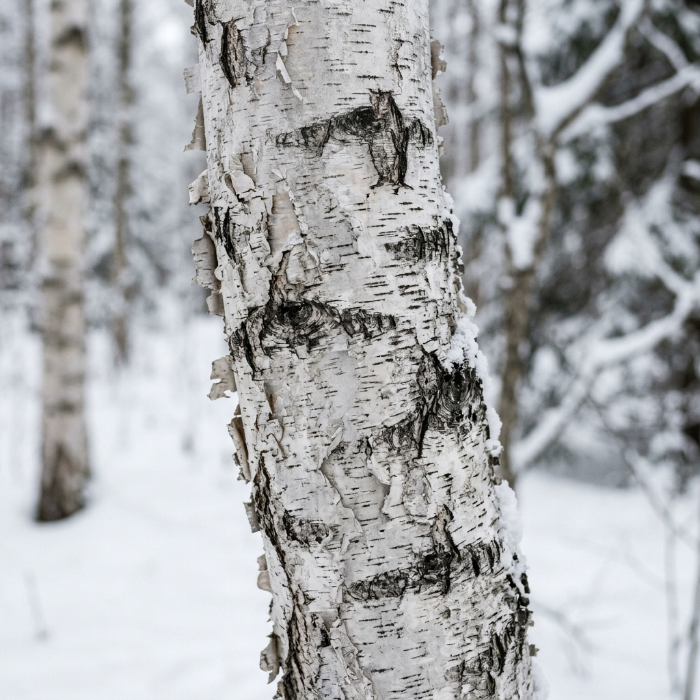

Fjäll.
Calm sound,
natural interface.
Fjäll (Swedish: “the fell”, the bare highland above the tree line) is the design language for DialOS. It takes its cues from Nordic workspaces and Nordic landscapes: soft daylight, honest materials, muted colour taken from moss, birch, fjord water and cloudberry, and lots of quiet space.
Use the Polar Night / Birch Day switch at the top. Every screen on this page re-renders from the same token set, which shows the theme holds together in both modes.
Four rules behind every pixel
When a design decision is unclear, check it against these four principles. If a screen breaks one of them, it doesn't ship.
Moodboard: the land above the trees
Every colour token is sampled from one of these four materials. Use this board to decide what is "on-brand": if a colour could not be found on this hillside, it does not belong in the UI.

Birch gives the light neutrals: the snow-linen text and the warm sand highlights.
Moss gives the single primary accent. It marks selection, focus, progress and "on".
Fjord gives the night surfaces and the connectivity colour, plus a thin cloudberry sunrise for warmth.
Nordic office covers oak, linen, wool and soft daylight: rounded geometry, tactile surfaces, no gloss.
Palette & semantic tokens
Engineers never use a hex value directly. They use a role token (surface-1, accent, danger…), and the mode (Night / Day) decides which hex value that role resolves to. Contrast ratios below are calculated live against bg.
Neutrals: granite & snow
Nature accents
One accent, used with intent
The current screens mix amber, cyan and green on the same view. Fjäll fixes this with a strict rule: Moss is the only interactive accent. The other nature colours are semantic, so each one always means the same thing anywhere in the OS.
Proportion per screen (60 · 30 · 10)
Semantic meaning: fixed everywhere
Do & don't
Inter, set calm & legible at 1.8″
One family (Inter, OFL licence, bundled as a bitmap/TTF atlas on device) with seven roles. Sizes are in device pixels on the 360 × 360 panel. Numbers always use tabular figures so times and volume levels don't jitter as they change.
- Minimum on-device size: 11 px. Caption / overline only.
- Uppercase is reserved for Caption & Overline, always tracked +0.14–0.16 em. Never uppercase titles.
- Max 2 weights per screen (usually 600 + 500). Display uses 300 for an airy clock.
- Text is centred in the circle. Long strings truncate with an ellipsis (one line) or marquee only on the focused row after 1.2 s.
- Colour order:
text-1for the subject,text-2for supporting detail,text-3for hints. Accent-coloured text only for the active value.
Designing for a circle
Every screen uses three concentric zones. The rim belongs to the thumb, the stage holds content, and the core holds the single most important thing. Nothing interactive sits outside the rim ring, and nothing essential sits under it.
| Zone | Radius (px from centre) | Purpose |
|---|---|---|
| Rim | r 150 – 180 | Touch band for rotary gestures (list scroll, volume, brightness). Holds only arcs, ticks and a 2-letter label. Track seek lives on the inner vinyl circle (r = 38 px, 0° = 0% → 359° = 99%). |
| Stage | r 60 – 150 | Lists, cards, controls. Usable width ≈ 2·√(150² − y²). Rows narrow towards the top & bottom. |
| Core | r 0 – 60 | The hero: album art, clock, focused item, primary value. Tap here = primary action. |
| Safe square | 254 × 254 @ (53,53) | Inscribed square: a rectangular layout is guaranteed visible inside it. |
| Status line | y 20 – 36 | Time · battery, centred. Max width 140 px. |
| Hint line | y 324 – 340 | Gesture hint (Caption). Fades out after 3 s of use. |
| Touch target | ≥ 44 × 44 | Visual can be smaller (e.g. 32 px icon) but the hit area is padded to 44. |
Soft, pebble-like shapes
There are no sharp corners and no hard drop shadows. Depth comes from tone: each elevation step is a slightly lighter surface (Night) or slightly darker surface (Day), the way wool layers on wool.
Spacing · 4 px base
Corner radius
Elevation by tone
Fjäll line icons
A custom set drawn on a 24 px grid with a 1.75 px stroke, round caps and joins, and 2 px of padding. Shapes are softened, a little organic: pebble-shaped controller, leaf for “liked”, tree rings for “now playing”. Icons are one colour and inherit currentColor.
Six pebbles, one family
Each core app gets a pebble: a circle tinted 18 % with its nature colour, with the line icon in that colour on top. The tint is the only place an app colour shows up. Inside the app, Moss takes over again. That keeps the launcher lively and the apps calm.
Construction
The building blocks
Every screen in this document is assembled only from these components. If a new screen needs something that isn't here, add it to this page first, then build it.
Default · Focused · Pressed · Disabled
On a rotary UI, focus means the item under the virtual click-wheel. It is always shown with a 1.5 px Moss border and a one-step-lighter surface, never with colour alone. Pressed = one more tone step plus a 97 % scale. Disabled = 40 % opacity.
Movement like wind through grass
Motion is short, soft and physical: things settle into place instead of bouncing. Hover the curves to preview them. Each rim detent pairs a motion with a haptic tick so the wheel feels mechanical.
Navigation map & global gestures
The hierarchy is three levels deep at most. Each node carries the screen ID used on the screen slides, so design, the preview and the code all refer to screens the same way.
Global gestures: identical on every screen
Anatomy of a screen
A measured example of the two most common templates. The numbers are device pixels on the 360 grid. Every list screen and every "now playing"-style screen follows the same measurements.
Lock, home & system hub
The entry points. The Home carousel shows one app at a time in the core. The thumb rotates the rim to switch apps and a tap opens the app. Pull down from the top edge, from anywhere, to open the Control Center.
Now Playing · Pure Full-Bleed Vinyl
The 360 × 360 full-bleed cover is completely free of text and has no left-side seek arc. Track progress is a single 360° ring around the inner circle of the vinyl (r = 38 px), where 0° (12 o'clock) = 0% and 359° = 99% of the song. Users can seek either by sliding the inner circle directly (radial angle capture) or by long-pressing & turning anywhere on the vinyl like a real turntable. 1 touch opens Quick Actions (floating song/artist/album + bottom 4-icon arc); 2 quick touches pauses or plays.
Music Library
All lists use the same Fisheye Rim List: the focused row sits at the centre at full width, and neighbours shrink and fade towards the edges of the circle.
Browse Files
A direct view of the microSD tree. Long-pressing a file opens the Action Sheet to edit metadata & filename, move, or delete. Long-pressing a folder allows renaming the folder, or recursively moving / deleting the folder and all contents inside it. Destructive actions require a 600 ms hold on the Lingon button.
Operating Modes
The six hardware modes share one status template: overline, mode pebble, hero value, two info rows and the output line. Only the data changes, never the layout.
Settings & Fast-Cache Bluetooth
Settings are rows with a value on the right: a chevron to drill down, a toggle to switch, or a short value chip. In Bluetooth (SET-07), the last connected device becomes the default MRU peer (cached in NVS with its BD_ADDR, clock offset, remote AVDTP SEID, preferred codec, and saved volume). On Bluetooth enable, DialOS issues a unicast Direct Page before scanning (< 400 ms reconnect) and negotiates the codec ladder from LDAC 990 kbps down to SBC.
Arcade
Games are allowed to play a little more, but only with palette colours: Cloudberry for score and energy, Moss for the player, Fjord for the field.
Dialogs, toasts & HUDs
Transient UI is always layered above a 72 % scrim with a 6 px blur, so context stays visible but out of the way. Toasts auto-dismiss after 2.4 s. Dialogs need an explicit choice.
Quiet, but never hard to read
The checks below are calculated live from the tokens for the current mode. Switch modes at the top to verify the other one.
Design tokens: copy & build
These exports are generated from the same object that renders this page. The C header includes RGB565 values for the DISC framebuffer and is meant to replace the Stone palette in include/dial_theme.h.
Build checklist per screen
Before a screen is merged, it is compared against this page side by side. Every box must be true.